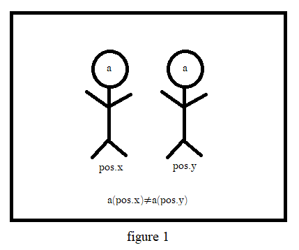
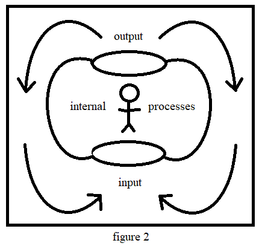

"Who am I?"
The question is as fundamental as it is timeless, and a bit cliché as well. It is worth asking, however. What makes us who we are, and what makes us different from any other? There are many possible answers, but in order to work smoothly with the question, we should set aside all of the difficult possibilities, and first look to what we can be (broadly) sure of: Each of us, each individual are subject to different material conditions. We inhabit different parts of the world. Even if you were to (hypothetically) find two individuals that are completely alike in every way, and put them under the same conditions, in the same room, they would still occupy a different space within that room. (See figure 1.)
So, you see! You truly are unique! There's no way to avoid it. No denying figure 1. No, sir.
But could a small difference like this really perfectly account for our individuality? Of course not. We are leaving out a crucial dimension to the question. We have not yet considered the internal world of the individual. It is much more difficult to discuss, because we are much less sure about it. We will attempt to proceed, continuing to restrict our observations to the most basic, in order to avoid error (or wandering into rabbithole questions that are impossible to answer).
We live in the world, and it affects us. We observe the world, and it affects us. Our observations affect how we observe the world, in turn. How we observe the world alters the way we live in the world. And so on. And so on. And we change the world just as much as it changes us (although it is a hard sum to quanitify), not so visible in rocks and trees, but very visible in the work we do, and in our relations with others.
And so, just as much as we are a reflection of the world, the world is a reflection of us. And yet, we are so very small a part. What is our significance, in this great multitude, and furthermore, where is the I in this process? We may be content to reside in the vaguities of the difficult-to-define internal processes (see figure 2) of the system, but this feels like willful avoidance. The reason for this avoidance is simple: the more we investigate the matter, the fewer places there seem to be for I to hide.
In any case, let us simply agree that who we are is closely connected with the world that we experience. The sights we see the things we do, the choices we make - all of this is central to who we are. It is also crucial to remember that we can see things, do things, and make choices within ourselves, in our thoughts, in our imaginations, as well. In fact, our powers and our horizons in our internal world can greatly exceed the external. The more we investigate the internal landscape of our being, the more we are conscious of, the more it opens out - presenting vast areas of inquiry and exploration. It is like another world, seemingly bounded only by the distance we travel consciously within it.
Now the role of the author as world-builder seems more weighty. If the internal world which we experience is just as much a platform for our growth and development as the external world we inhabit, then what should we say of books? Books present to us a fully new landscape to go through, adventures crafted by the master, the lessons of which for us to assimilate.
What are we to say of books?